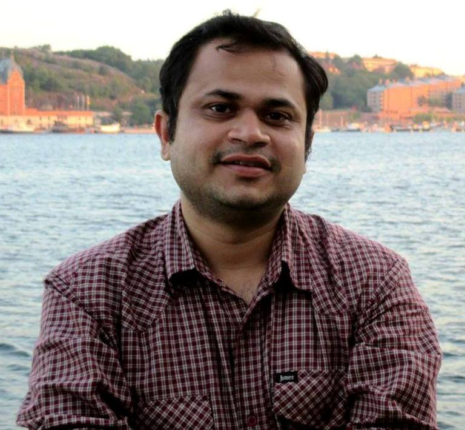

Md Sahidullah
Associate Professor, Institute for Advancing Intelligence, TCG CREST, India
Phone: +91-9433289799
Email: md.sahidullah@tcgcrest.org OR sahidullahmd@gmail.com
[ Research |
Education |
Publications|
Professional Activities|
Google Scholar Profile|
ResearchGate Profile]
About me
I am a researcher with more than eight years of post-qualification experience in the speech processing area. I have a general interest in speech science and technology. My activities include writing monographs, mentoring doctoral students, creating teaching materials for post-graduate courses, reviewing research articles, and promoting scientific awareness.
Specific areas of interest
- Signal processing and machine learning for acoustic pattern analysis
- Speaker recognition and spoofing countermeasures
- Speech representation learning
- Audio dataset collection, analysis and design of experiments
Professional experiences
- Associate Professor, Institute for Advancing Intelligence, TCG CREST, India (November 2026 -- Present)
- Assistant Professor, Institute for Advancing Intelligence, TCG CREST, India (June 2023 -- October 2026)
- Independent Researcher & Consultant (September 2021 -- May 2023)
- Researcher, Inria, France (September 2018 -- August 2021)
- Post-doctoral Researcher, Inria, France (January 2018 -- August 2018)
- Visiting Scientist, Inria, France (August 2017 -- November 2017)
- Post-doctoroal Researcher, University of Eastern Finland, Finland (April 2014 -- April 2017)
- Programmer Analyst Trainee, Cognizant Technology Solutions Corporation, India (May 2006 -- January 2008)
Education
Publications
Refereed Journal papers
- X. Wang, H. Delgado, N. Evans, X. Liu, T. Kinnunen, H. Tak, K.A. Lee, I. Kukanov, M. Sahidullah, M. Todisco, J. Yamagishi; "ASVspoof 5: Evaluation of Spoofing, Deepfake, and Adversarial Attack Detection Using Crowdsourced Speech"; IEEE/ACM Transactions on Audio, Speech, and Language Processing, Vol 34, Page 2354-2367, 2026.
- X. Wang, H. Delgado, H. Tak, J.-W. Jung, H.-J. Shim, M. Todisco, I. Kukanov, X. Liu, M. Sahidullah, T. Kinnunen, N. Evans, K.A. Lee, J. Yamagishi et al.; "ASVspoof 5: Design, collection and validation of resources for spoofing, deepfake, and adversarial attack detection using crowdsourced speech"; Computer Speech & Language, Vol 95, 101825, 2026.
- V.P. Singh, M. Sahidullah, T. Kinnunen; "Causal analysis of ASR errors for children: Quantifying the impact of physiological, cognitive, and extrinsic factors"; Computer Speech & Language, Vol 95, 101859, 2026.
- M. Sahidullah, H.-J. Shim, R. Gonzalez Hautamäki, T. Kinnunen; "Shortcut learning in binary classifier black boxes: Applications to voice anti-spoofing and biometrics"; IEEE Journal of Selected Topics in Signal Processing, Accepted for publication, 2025.
- S.A. Sheikh, M. Sahidullah, I. Kodrasi; "Overview of automatic speech analysis and technologies for neurodegenerative disorders: Diagnosis and Assistive Applications"; IEEE Journal of Selected Topics in Signal Processing, Vol 19, No 5, Page 700-716, 2025.
- X. Liu, M. Sahidullah, K.A. Lee, T. Kinnunen; "Generalizing speaker verification for spoof awareness in the embedding space"; IEEE/ACM Transactions on Audio, Speech, and Language Processing, Vol 32, Page 1261-1273, 2024.
- S. Dey, M. Sahidullah, G. Saha; "Towards cross-corpora generalization for low-resource spoken language identification"; IEEE/ACM Transactions on Audio, Speech, and Language Processing, Vol 32, Page 5040-5050, 2024.
- X. Liu, X. Wang, M. Sahidullah, J. Patino, H. Delgado, T. Kinnunen, M. Todisco, J. Yamagishi, N.W.D. Evans, A. Nautsch, K.A. Lee; "ASVspoof 2021: Towards spoofed and deepfake speech detection in the wild"; IEEE/ACM Transactions on Audio, Speech, and Language Processing, Vol 31, Page 2507-2522, 2023.
- S.A. Sheikh, M. Sahidullah, F. Hirsch, S. Ouni; "Stuttering detection using speaker representations and self-supervised contextual embeddings"; International Journal of Speech Technology, Vol 26, Issue 2, Page 521-530, 2023.
- S. Dey, M. Sahidullah, G. Saha; "Cross-corpora spoken language identification with domain diversification and generalization"; Computer Speech & Language, Vol 81, 101489, 2023.
- S.A. Sheikh, M. Sahidullah, F. Hirsch, S. Ouni; "Advancing stuttering detection via data augmentation, class-balanced loss and multi-contextual deep learning"; IEEE Journal of Biomedical and Health Informatics, Vol 27, No 5, Page 2553-2564, 2023.
- P. Singh, M. Sahidullah, G. Saha; "Modulation spectral features for speech emotion recognition using deep neural networks"; Speech Communication, Vol 146, Page 53-69, 2022.
- S. Dey, M. Sahidullah, G. Saha; "An overview of Indian spoken language recognition from machine learning perspective"; ACM Transactions on Asian and Low-Resource Language Information Processing, Vol 21, No 6, Page 1-45, 2022.
- A.K. Kumar, S. Waldekar, M. Sahidullah, G. Saha; "Robust acoustic domain identification with its application to speaker diarization"; International Journal of Speech Technology, Vol 25, Page 933-945, 2022.
- P. Singh, S. Waldekar, M. Sahidullah, G. Saha; "Analysis of constant-Q filterbank based representations for speech emotion recognition"; Digital Signal Processing, Vol 130, 103712, 2022.
- S.A. Sheikh, M. Sahidullah, F. Hirsch, S. Ouni; "Machine learning for stuttering identification: review, challenges and future directions"; Neurocomputing, Vol 514, Page 385-402, 2022.
- B.M.L. Srivastava, M. Maouche, M. Sahidullah, E. Vincent, A. Bellet, M. Tommasi, N. Tomashenko, X. Wang, J. Yamagishi; "Privacy and utility of x-vector based speaker anonymization"; IEEE/ACM Transactions on Audio, Speech, and Language Processing, Vol 30, Page 2383-2395, 2022.
- X. Liu, M. Sahidullah, T. Kinnunen; "Optimizing multi-taper features for deep speaker verification"; IEEE Signal Processing Letters, Vol 28, Page 2187-2191, 2021.
- N. Sen, M. Sahidullah, H. Patil, S.K.D. Mandal, K.S. Rao, T.K. Basu; "Utterance partitioning for speaker recognition: an experimental review and analysis with new findings under GMM-SVM framework"; International Journal of Speech Technology, Vol 24, Issue December 2021, Page 1067-1088, 2021.
- A. Nautsch, X. Wang, N. Evans, T. H Kinnunen, V. Vestman, M. Todisco, H. Delgado, M. Sahidullah, J. Yamagishi, K.A. Lee; "ASVspoof 2019: spoofing countermeasures for the detection of synthesized, converted and replayed speech"; IEEE Transactions on Biometrics, Behavior, and Identity Science, Vol 3, Issue 2, Page 252-265, 2021.
- A.K. Kumar, D. Paul, M. Pal, M. Sahidullah, G. Saha; "Speech frame selection for spoofing detection with an application to partially spoofed audio-data"; International Journal of Speech Technology, Vol 24, Issue March 2021, Page 193–203, 2021.
- X. Wang, J. Yamagishi, M. Todisco, H. Delgado, A. Nautsch, N. Evans, M. Sahidullah, V. Vestman, T. Kinnunen, K.A. Lee, L. Juvela, P. Alku, Y.H. Peng, H.T. Hwang, Y. Tsao, H.M. Wang, S.L. Maguer, M. Becker, F. Henderson, R. Clark, Y. Zhang, Q. Wang, Y. Jia, K. Onuma, K. Mushika, T. Kaneda, Y. Jiang, L.J. Liu, Y.C. Wu, W.C. Huang, T. Toda, K. Tanaka, H. Kameoka, I. Steiner, D. Matrouf, J.F. Bonastre, A. Govender, S. Ronanki, J.X. Zhang, Z.H. Ling; "ASVspoof 2019: A large-scale public database of synthesized, converted and replayed speech"; Computer Speech & Language, Vol 65, Issue November 2020, 101114, 2020.
- S. Sarangi, M. Sahidullah, G. Saha; "Optimization of data-driven filterbank for automatic speaker verification"; Digital Signal Processing, Vol 104, Issue September 2020, 102795, 2020.
- T. Kinnunen, H. Delgado, N. Evans, K.A. Lee, V. Vestman, A. Nautsch, M. Todisco, X. Wang, M. Sahidullah, J. Yamagishi, D.A. Reynolds; "Tandem assessment of spoofing countermeasures and automatic speaker verification: Fundamentals"; IEEE/ACM Transactions on Audio, Speech, and Language Processing, Vol 28, Page 2195-2210, 2020.
- V. Vestman, T. Kinnunen, R.G. Hautamäki, M. Sahidullah; "Voice mimicry attacks assisted by automatic speaker verification"; Computer Speech & Language, Vol 59, Issue January 2020, Page 36-54, 2020.
- A. Poddar, M. Sahidullah, G. Saha; "Quality measures for speaker verification with short utterances"; Digital Signal Processing, Vol 88, Issue May 2019, Page 66-79, 2019.
- A. Poddar, M. Sahidullah, G. Saha; "Improved i-vector extraction technique for speaker verification with short utterances"; International Journal of Speech Technology, Vol 21, Issue 3, Page 473-488, 2018.
- V Vestman, D Gowda, M. Sahidullah, P Alku, T Kinnunen; "Speaker recognition from whispered speech: A tutorial survey and an application of time-varying linear prediction"; Speech Communication, Vol 99, Issue May 2018, Page 62-79, 2018.
- A. Poddar, M. Sahidullah, G. Saha; "Speaker verification with short utterances: a review of challenges, trends and opportunities"; IET Biometrics, Vol 7, Issue 2, Page 91-101, 2018.
- A. Sholokhov, M. Sahidullah, T. Kinnunen; "Semi-supervised speech activity detection with an application to automatic speaker verification"; Computer Speech & Language, Vol 47, Issue January 2018, Page 132-156, 2018.
- M. Sahidullah, D.A.L. Thomsen, R.G. Hautamäki, T. Kinnunen, Z.H. Tan, R. Parts, and M. Pitkänen; "Robust voice liveness detection and speaker verification using throat microphones"; IEEE/ACM Transactions on Audio, Speech, and Language Processing, Vol 26, No 1, Page 44-56, 2017.
- R.G. Hautamäki, M. Sahidullah, V. Hautamäki, T. Kinnunen; "Acoustical and perceptual study of voice disguise by age modification in speaker verification"; Speech Communication, Vol 95, Issue December 2017, Page 1-15, 2017.
- Z. Wu, J. Yamagishi, T. Kinnunen, C. Hanilci, M. Sahidullah, A. Sizov, N. Evans, M. Todisco, H. Delgado; "ASVspoof: The automatic speaker verification spoofing and countermeasures challenge"; IEEE Journal on Selected Topics in Signal Processing, Vol 11, Issue 14, Page 588-604, 2017.
- C. Hanilci, T. Kinnunen, M. Sahidullah, and A. Sizov; "Spoofing detection goes noisy: An analysis of synthetic speech detection in the presence of additive noise"; Speech Communication, Vol 85, December 2016, Page 83-97.
- N. Sengupta, M. Sahidullah and G. Saha; "Lung sound classification using cepstral-based statistical features"; Computers in Biology and Medicine, Vol 75, No 1, Page 118-129, 2016.
- M. Sahidullah and T. Kinnunen; "Local spectral variability features for speaker verification"; Digital Signal Processing, Vol 50, Page 1-11, March 2016.
- M. Sahidullah and G. Saha; "A novel windowing technique for efficient computation of MFCC for speaker recognition"; IEEE Signal Processing Letters, Vol 20, No 2, Page 149-152, 2013.
- M. Sahidullah and G. Saha; "Design, analysis and experimental evaluation of block based transformation in MFCC computation for speaker recognition"; Speech Communication, Vol 54, No 4, Page 543-565, 2012.
- M. Sahidullah, S. Chakroborty and G. Saha; "On the use of perceptual line spectral pairs frequencies and higher-order residual moments for speaker identification"; International Journal of Biometrics, Vol 2, No 4, Page 358-378, 2010.
Refereed Conference papers
- V. Pratap Singh, M. Sahidullah, T. Kinnunen; "Causal structure discovery for error diagnostics of children's ASR"; Proc. Interspeech 2025.
- P. Gogoi, V. Pratap Singh, S. Khadirnaikar, S. Siddhartha, S. Kalita, J. Mishra, M. Sahidullah, P. Sarmah, S.R.M. Prasanna; "Leveraging AM and FM rhythm spectrograms for dementia classification and assessment"; Proc. Interspeech 2025.
- T. Jana, N. Raghav, A. Majumdar, M. Sahidullah; "Exact rotation invariant robust PCA"; Proc. IEEE ICASSP 2025.
- N. Raghav, A. Gupta, M. Sahidullah, S. Das; "Self-tuning spectral clustering for speaker diarization"; Proc. IEEE ICASSP 2025.
- X. Liu, J. Yamagishi, M. Sahidullah, T. Kinnunen; "Explaining speaker and spoof embeddings via probing"; Proc. IEEE ICASSP 2025.
- S.A. Sheikh, Y. Kaloga, M. Sahidullah, I. Kodrasi; "Graph neural networks for Parkinson's disease detection"; Proc. IEEE ICASSP 2025.
- X. Wang, H. Delgado, H. Tak, J.-W. Jung, H.-J. Shim, M. Todisco, I. Kukanov, X. Liu, M. Sahidullah, T. Kinnunen, N.W.D. Evans, K.A. Lee, J. Yamagishi; "ASVspoof 5: Crowdsourced speech data, deepfakes, and adversarial attacks at scale"; ASVspoof Workshop, INTERSPEECH 2024 Satellite Event.
- H.-J. Shim, M. Sahidullah, J.-W. Jung, S. Watanabe, T. Kinnunen; "Beyond silence: Bias analysis through loss and asymmetric approach in audio anti-spoofing"; SynData4GenAI, INTERSPEECH 2024 Satellite Event.
- N. Raghav, M. Sahidullah; "Assessing the robustness of spectral clustering for deep speaker diarization"; Proc. 21st IEEE India Council International Conference (INDICON), 2024.
- H.-J. Shim, R. Gonzalez Hautamäki, M. Sahidullah, T. Kinnunen; "How to construct perfect and worse-than-coin-flip spoofing countermeasures: A word of warning on shortcut learning"; Proc. INTERSPEECH 2023, pp. 785-789.
- V.P. Singh, M. Sahidullah, T. Kinnunen; "Speaker verification across ages: Investigating deep speaker embedding sensitivity to age mismatch in enrollment and test speech"; Proc. INTERSPEECH 2023, pp. 1948-1952.
- X. Liu, M. Sahidullah, K.A. Lee, T. Kinnunen; "Speaker-aware anti-spoofing"; Proc. INTERSPEECH 2023, pp. 2498-2502.
- S.H. Mun, H.-J. Shim, H. Tak, X. Wang, X. Liu, M. Sahidullah, M. Jeong, M.H. Han, M. Todisco, K.A. Lee, J. Yamagishi, N.W.D. Evans, T. Kinnunen, N.S. Kim, J.-W. Jung; "Towards single integrated spoofing-aware speaker verification embeddings"; Proc. INTERSPEECH 2023, pp. 3989-3993.
- S.A. Sheikh, M. Sahidullah, F. Hirsch, S. Ouni; "End-to-End and self-supervised learning for ComParE 2022 Stuttering Sub-Challenge"; Proc. ACM Multimedia, Lisbon, Portugal, October 2022.
- H.-J. Shim, H. Tak, X. Liu, H.-S. Heo, J.-W. Jung, J.S. Chung, S.-W. Chung, H.-J. Yu, B.-J. Lee, M. Todisco, H. Delgado, K.A. Lee, M. Sahidullah, T. Kinnunen, N. Evans; "Baseline systems for the first spoofing-aware speaker verification challenge: score and embedding fusion"; Proc. Odyssey, Beijing, China, June-July 2022.
- A. Sholokhov, X. Liu, M. Sahidullah, T. Kinnunen; "Baselines and protocols for household speaker recognition"; Proc. Odyssey, Beijing, China, June-July 2022.
- X. Liu, M. Sahidullah, T. Kinnunen; "Spoofing-aware speaker verification with unsupervised domain adaptation"; Proc. Odyssey, Beijing, China, June-July 2022.
- S.A. Sheikh, M. Sahidullah, F. Hirsch, S. Ouni; "Robust stuttering detection via multi-task and adversarial learning"; Proc. EUSIPCO, Belgrade, Serbia, August-September 2022.
- X. Liu, M. Sahidullah, T. Kinnunen; "Learnable nonlinear compression for robust speaker verification"; Proc. IEEE ICASSP, Singapore, May 2022.
- J. Yamagishi, X. Wang, M. Todisco, M. Sahidullah, J. Patino, A. Nautsch, X. Liu, K.A. Lee, T. Kinnunen, N. Evans, H. Delgado; "ASVspoof 2021: Accelerating progress in spoofed and deepfake speech detection"; Proc. 2021 Edition of the Automatic Speaker Verification and Spoofing Countermeasures Challenge, Virtual, September 2021.
- X. Liu, M. Sahidullah, T. Kinnunen; "Optimized power normalized cepstral coefficients towards robust deep speaker verification"; Proc. IEEE ASRU, Cartagena, Colombia, December 2021.
- X. Liu, M. Sahidullah, T. Kinnunen; "Parameterized channel normalization for far-field deep speaker verification"; Proc. IEEE ASRU, Cartagena, Colombia, December 2021.
- J.-F. Bonastre, H. Delgado, N. Evans, T. Kinnunen, K.A. Lee, X. Liu, A. Nautsch, P.-G. Noe, J. Patino, M. Sahidullah, B.M.L. Srivastava, M. Todisco, N. Tomashenko, E. Vincent, X. Wang, J. Yamagishi; "Benchmarking and challenges in security and privacy for voice biometrics"; Proc. ISCA Symposium on Security and Privacy in Speech Communication, Virtual, November 2021.
- R. Duroselle, M. Sahidullah, D. Jouvet, I. Illina; "Modeling and training strategies for language recognition systems"; Proc. INTERSPEECH, Brno, Czech Republic, August-September 2021.
- R. Duroselle, M. Sahidullah, D. Jouvet, I. Illina; "Language recognition on unknown conditions: The LORIA-Inria-MULTISPEECH system for AP20-OLR challenge"; Proc. INTERSPEECH, Brno, Czech Republic, August-September 2021.
- B. Chettri, R.G. Hautamäki, M. Sahidullah, T. Kinnunen; "Data quality as predictor of voice anti-spoofing generalization"; Proc. INTERSPEECH, Brno, Czech Republic, August-September 2021.
- T. Kinnunen, A. Nautsch, M. Sahidullah, N. Evans, X. Wang, M. Todisco, H. Delgado, J. Yamagishi, K.A. Lee; "Visualizing classifier adjacency relations: A case study in speaker verification and voice anti-spoofing"; Proc. INTERSPEECH, Brno, Czech Republic, August-September 2021.
- S.A. Sheikh, M. Sahidullah, F. Hirsch, S. Ouni; "StutterNet: Stuttering detection using time delay neural network"; Proc. EUSIPCO, Dublin, Ireland, August 2021.
- S. Dey, G. Saha, M. Sahidullah; "Cross-corpora language recognition: A preliminary investigation with Indian languages"; Proc. EUSIPCO, Dublin, Ireland, August 2021.
- P. Singh, G. Saha, M. Sahidullah; "Deep scattering network for speech emotion recognition"; Proc. EUSIPCO, Dublin, Ireland, August 2021.
- P. Singh, G. Saha, M. Sahidullah; "Non-linear frequency warping using constant-Q transformation for speech emotion recognition"; Proc. International Conference on Computer Communication and Informatics (ICCCI), Coimbatore, India, January 2021.
- X. Liu, M. Sahidullah, T. Kinnunen; "Learnable MFCCs for speaker verification"; Proc. IEEE International Symposium on Circuits and Systems (ISCAS), Daegu, South Korea, May 2021.
- M. Sahidullah, A.K. Sarkar, V. Vestman, X. Liu, R. Serizel, T. Kinnunen, Z.-H. Tan, E. Vincent; "UIAI system for short-duration speaker verification challenge 2020"; Proc. IEEE Spoken Language Technology (SLT), Shenzhen, China, January 2021.
- X. Liu, M. Sahidullah, T. Kinnunen; "A comparative re-assessment of feature extractors for deep speaker embeddings"; Proc. INTERSPEECH, Shanghai, China, October 2020.
- B.M.L. Srivastava, N. Vauquier, M. Sahidullah, A. Bellet, M. Tommasi, E. Vincent; "Evaluating voice conversion-based privacy protection against informed attackers"; Proc. IEEE ICASSP, Barcelona, Spain, May 2020.
- M. Todisco, X. Wang, V. Vestman, M. Sahidullah, H. Delgado, A. Nautsch, N. Evans, T. Kinnunen, K.A. Lee; "ASVspoof 2019: Future horizons in spoofed and fake audio detection"; Proc. INTERSPEECH, Graz, Austria, September 2019.
- T. Kinnunen, R.G. Hautamäki, V. Vestman, M. Sahidullah; "Can we use speaker recognition technology to attack itself? Enhancing mimicry attacks using automatic target speaker selection"; Proc. IEEE ICASSP, Brighton, UK, May 2019.
- F. Fang, J. Yamagishi, I. Echizen, M. Sahidullah, T. Kinnunen; "Transforming acoustic characteristics to deceive playback spoofing countermeasures of speaker verification systems"; Proc. IEEE International Workshop on Information Forensics and Security (WIFS), Hong Kong, December 2018.
- M. Todisco, H. Delgado, K.A. Lee, M. Sahidullah, N. Evans, T. Kinnunen, J. Yamagishi; "Integrated presentation attack detection and automatic speaker verification: Common features and Gaussian back-end fusion"; Proc. INTERSPEECH, Hyderabad, India, September 2018.
- S. Sieranoja, M. Sahidullah, T. Kinnunen, J. Komulainen, A. Hadid; "Audiovisual synchrony detection with optimized audio features"; Proc. IEEE 3rd International Conference on Signal and Image Processing (ICSIP), Shenzhen, China, July 2018.
- T. Kinnunen, K.A. Lee, H. Delgado, N. Evans, M. Todisco, M. Sahidullah, J. Yamagishi, D.A. Reynolds; "t-DCF: A detection cost function for the tandem assessment of spoofing countermeasures and automatic speaker verification"; Proc. Odyssey, Les Sables d'Olonne, France, June 2018.
- H. Delgado, M. Todisco, M. Sahidullah, N. Evans, T. Kinnunen, K.A. Lee, J. Yamagishi; "ASVspoof 2017 Version 2.0: Meta-data analysis and baseline enhancements"; Proc. Odyssey, Les Sables d'Olonne, France, June 2018.
- A. Poddar, M. Sahidullah, G. Saha; "Novel quality metric for duration variability compensation in speaker verification using i-vectors"; Proc. International Conference on Advances in Pattern Recognition (ICAPR), Bangalore, India, December 2017.
- A. Poddar, M. Sahidullah, G. Saha; "An adaptive i-vector extraction for speaker verification with short utterance"; Proc. Pattern Recognition and Machine Intelligence (PReMI), Kolkata, India, December 2017.
- H. Delgado, M. Todisco, N. Evans, M. Sahidullah, W.M. Liu, F. Alegre, T. Kinnunen, B. Fauve; "Impact of bandwidth and channel variation on presentation attack detection for speaker verification"; Proc. BIOSIG, Darmstadt, Germany, September 2017.
- T. Kinnunen, M. Sahidullah, H. Delgado, M. Todisco, N. Evans, J. Yamagishi, K.A. Lee; "The ASVspoof 2017 challenge: Assessing the limits of replay spoofing attack detection"; Proc. INTERSPEECH, Stockholm, Sweden, August 2017.
- V. Vestman, D. Gowda, M. Sahidullah, P. Alku, T. Kinnunen; "Time-varying autoregressions for speaker verification in reverberant conditions"; Proc. INTERSPEECH, Stockholm, Sweden, August 2017.
- A. Sarkar, M. Sahidullah, Z.-H. Tan, T. Kinnunen; "Improving speaker verification performance in presence of spoofing attacks using out-of-domain spoofed data"; Proc. INTERSPEECH, Stockholm, Sweden, August 2017.
- K.A. Lee, V. Hautamäki, T. Kinnunen, A. Larcher, C. Zhang, A. Nautsch, T. Stafylakis, G. Liu, M. Rouvier, W. Rao, F. Alegre, J. Ma, M.W. Mak, A. Sarkar, H. Delgado, R. Saeidi, H. Aronowitz, A. Sizov, H. Sun, T.H. Nguyen, G. Wang, B. Ma, V. Vestman, M. Sahidullah et al.; "The I4U mega fusion and collaboration for NIST speaker recognition evaluation 2016"; Proc. INTERSPEECH, Stockholm, Sweden, August 2017.
- D. Paul, M. Sahidullah, G. Saha; "Generalization of Spoofing Countermeasures: A Case Study with ASVspoof 2015 and BTAS 2016 Corpora"; Proc. IEEE ICASSP 2017, pp. 2047-2051, New Orleans, USA, March 2017. (PDF)
- T. Kinnunen, M. Sahidullah, M. Falcone, L. Costantini, R.G. Hautamäki, D. Thomsen, A. Sarkar, Z.-H. Tan, H. Delgado, M. Todisco, N. Evans, V. Hautamäki and K.A. Lee; "RedDots Replayed: A New Replay Spoofing Attack Corpus for Text-dependent Speaker Verification Research"; Proc. IEEE ICASSP 2017, pp. 5395-5399, New Orleans, USA, March 2017. (PDF)
- A. Kanervisto, V. Vestman, M. Sahidullah, V. Hautamäkii, T. Kinnunen; "Effects of Gender Information in Text-independent and Text-dependent Speaker Verification"; Proc. IEEE ICASSP 2017, pp. 5360-5364, New Orleans, USA, March 2017. (PDF)
- H. Delgado, M. Todisco, M. Sahidullah, A. Sarkar, N. Evans, T. Kinnunen, and Z.-H. Tan; "Further optimisations of constant Q cepstral processing for integrated utterance verification and text-dependent speaker verification"; Proc. IEEE workshop on Spoken Language Technology 2016 (SLT2016) pp. 179-185, San Diego, USA, December 2016. (PDF)
- M. Sahidullah, H. Delgado, M. Todisco, H. Yu, T. Kinnunen, N. Evans and Z.-H. Tan; "Integrated Spoofing Countermeasures and Automatic Speaker Verification: an Evaluation on ASVspoof 2015"; Interspeech 2016, San Francisco, USA. (PDF)
- M. Sahidullah, R.G. Hautamäki, D.A.L. Thomsen, T. Kinnunen, Z.-H. Tan, V. Hautamäki, R. Parts and M. Pitkanen; "Robust Speaker Recognition with Combined Use of Acoustic and Throat Microphone Speech"; Interspeech 2016, San Francisco, USA. (PDF)
- T. Kinnunen, M. Sahidullah, I. Kukanov, H. Delgado, M. Todisco, A. Sarkar, N. Thomsen, V. Hautamaki, N. Evans and Z.-H. Tan; "Utterance Verification for Text-Dependent Speaker Recognition: a Comparative Assessment Using the RedDots Corpus"; Interspeech 2016, San Francisco, USA. (File Lists) (PDF)
- T. Kinnunen, A. Sholokhov, E. Khoury, D.A.L. Thomsen, M. Sahidullah and Z.-H. Tan; "HAPPY Team Entry to NIST OpenSAD Challenge: A Fusion of Short-Term Unsupervised and Segment i-Vector Based Speech Activity Detectors"; Interspeech 2016, San Francisco, USA. (PDF).
- P. Korshunov, S. Marcel, H. Muckenhirnand, A.R. Gonçalves, A.G. Souza Mello, R.P. Velloso Violato, F.O. Simões, M.U. Neto, M. de Assis Angeloni, J.A. Stuchi, H. Dinkel, N. Chen, Y. Qian, D. Paul, G. Saha and M. Sahidullah; "Overview of BTAS 2016 Speaker Anti-spoofing Competition"; 2016 IEEE 8th International Conference on Biometrics Theory, Applications and Systems (BTAS), Niagara Falls, Buffalo, New York (USA). (PDF)
- R.G. Hautamäki, M. Sahidullah, T. Kinnunen and V. Hautamäki; "Age-Related Voice Disguise and its Impact on Speaker Verification Accuracy"; Speaker Odyssey, Bilbao, Spain, 2016. (PDF).
- A. Poddar, M. Sahidullah and G. Saha; "Performance Comparison of Speaker Recognition Systems in Presence of Duration Variability"; Proc. 2015 Annual IEEE India Conference (INDICON),
New Delhi, India, December 2015. (PDF)
- N. Sengupta, M. Sahidullah and G. Saha; "Optimization of Cepstral Features for Robust Lung Sound Classification"; Proc. 2015 Annual IEEE India Conference (INDICON),
New Delhi, India, December 2015.
- M. Sahidullah, T. Kinnunen and C. Hanilci; "A comparison of features for synthetic speech detection"; Proc. Interspeech 2015, pp. 2087-2091,
Dresden, Germany, September 2015. (MATLAB Codes) (PDF)
- C. Hanilci, T. Kinnunen, M. Sahidullah, and A. Sizov; "Classifiers for synthetic speech detection: a comparison"; Proc. Interspeech 2015, pp. 2057-2061,
Dresden, Germany, September 2015. (PDF)
- Z. Wu, T. Kinnunen, N. Evans, J. Yamagishi, C. Hanilci, M. Sahidullah, A. Sizov; "ASVspoof 2015: the first automatic speaker verification spoofing and countermeasures challenge"; Proc. Interspeech 2015, pp. 2037-2041,
Dresden, Germany, September 2015. (PDF)
- M. Sahidullah, G. Saha; "On the use of perceptual Line Spectral Pairs Frequencies for speaker identification"; Proc. National Conference on Communications (NCC2010) 2010,
Chennai, India, January 2010. (PDF)
- M. Sahidullah, G. Saha; "In Search of Auto Correlation Based Vocal Cord Cues for Speaker Identification"; Proc. International Conference on RF and Signal Processing Systems (RSPS2010),
Vijayawada, India, January 2010.
- M. Sahidullah, S. Chakroborty, G. Saha; "Improving Performance of Speaker Identification System Using Complementary Information Fusion"; Proc. 17th International Conference on Advanced Computing and Communications (ADCOM 2009),
Bangalore, India, December 2009. (PDF)
- M. Sahidullah, G. Saha; "On the Use of Distributed DCT in Speaker Identification"; Proc. 2009 Annual IEEE India Conference (INDICON),
Ahmedabad, India, December 2009.
- J. Basu, M. Sahidullah, A. Sinha; "A New Generalized Reconfigurable Architecture for Digital Signal Processor"; Proc. 15th International Conference on Advanced Computing and Communications (ADCOM 2007),
Guwahati, India, December 2007.
- J. Basu, M. Sahidullah; "A New Generalized Architecture for Digital Signal Processor"; Proc. Second International Conference on Embedded Systems, Mobile Communication and Computing (ICEMC2 2007),
Bangalore, India, August 2007.
Others (Technical reports, system descriptions, and rejected manuscripts)
- M. Sahidullah, G. Saha; "Comparison of speech activity detection techniques for speaker recognition"; arXiv preprint arXiv:1210.0297, 2012.
- M. Pal, D. Paul, M. Sahidullah, G. Saha; "Robustness of voice conversion techniques under mismatched conditions"; arXiv preprint arXiv:1612.07523, 2016.
- N. Sengupta, M. Sahidullah, G. Saha; "Lung sound classification using local binary pattern"; arXiv preprint arXiv:1710.01703, 2017.
- K.A. Lee, V. Hautamäki, T. Kinnunen, H. Yamamoto, K. Okabe, V. Vestman, J. Huang, G. Ding, H. Sun, A. Larcher, R. K. Das, H. Li, M. Rouvier, P.M. Bousquet, W. Rao, Q. Wang, C. Zhang, F. Bahmaninezhad, H. Delgado, J. Patino, Q. Wang, L. Guo, T. Koshinaka, J. Zhang, K. Shinoda, T.N. Trong, M. Sahidullah, F. Lu, Y. Tang, M. Tu, K.K. Teh, H.D. Tran, K.K. George, I. Kukanov, F. Desnous, J. Yang, E. Yılmaz, L. Xu, J.F. Bonastre, C. Xu, Z.H. Lim, E.S. Chng, S. Ranjan, J.H.L. Hansen, M. Todisco, N. Evans; "I4U submission to NIST SRE 2018: Leveraging from a decade of shared experiences"; arXiv preprint arXiv:1904.07386, 2019.
- M. Sahidullah, J. Patino, S. Cornell, R. Yin, S. Sivasankaran, H. Bredin, P. Korshunov, A. Brutti, R. Serizel, E. Vincent, N. Evans, S. Marcel, S. Squartini, C. Barras; "The Speed submission to DIHARD II: Contributions & lessons learned"; arXiv preprint arXiv:1911.02388, 2019.
- M. Sahidullah, R. Serizel, E. Vincent; "Inria-MULTISPEECH system description for VoxSRC 2019 challenge"; Proc. The first VoxCeleb Speaker Recognition Challenge, 2019.
- M. Sahidullah, R. Serizel, E. Vincent; "Inria system description for NIST SRE19"; Proc. The NIST SRE19 Workshop, 2019.
- A.K. Sarkar, M. Sahidullah, Z.H. Tan; "Data generation using pass-phrase-dependent deep auto-encoders for text-dependent speaker verification"; arXiv preprint arXiv:2102.02074, 2021.
- A.K. Kumar, S. Waldekar, M. Sahidullah, G. Saha; "ABSP system for the third DIHARD challenge"; arXiv preprint arXiv:2102.09939, 2021.
- A.K. Kumar, S. Waldekar, M. Sahidullah, G. Saha; "Domain-dependent speaker diarization for the third DIHARD challenge"; Proc. The Third DIHARD Speech Diarization Challenge Workshop, 2021.
- K.A. Lee, T. Kinnunen, D. Colibro, C. Vair, A. Nautsch, H. Sun, L. He, T. Liang, Q. Wang, M. Rouvier, P.M. Bousquet, R.K. Das, I.V. Bailo, M. Liu, H. Deldago, X. Liu, M. Sahidullah, S. Cumani, B. Zhang, K. Okabe, H. Yamamoto, R. Tao, H. Li, A.O. Gimenez, L. Wang, L. Buera; "I4U system description for NIST SRE20 CTS challenge"; arXiv preprint arXiv:2211.01091, 2022.
´
Professional Activities
Reviewer (Selected Journals)
- IEEE/ACM Transactions on Audio, Speech, and Language Processing
- IEEE Transactions on Information Forensics and Security
- IEEE Signal Processing Letters
- Speech Communication (Elsevier)
- Computer Speech & Language (Elsevier)
- Digital Signal Processsing (Elsevier)
Society Memberships
- IEEE (Student Member: 2009-2014, Member: 2015-)
- IEEE Signal Processing Society (2013-)
- International Speech Communication Association (2011-)
- American Mathematical Society (2014-)
Hobbies and Interests
Pages I Visit
- The Writing Center at UNC-Chapel Hill Link
- IEEE Signal Processing Society Link
- ISCA Web Link
- American Mathematical Society Link
Good Reads
- You and Your Research by Richard Hamming Link
- What's new by Terence Tao Link
- Complete Works of Swami Vivekananda Link
Books I Am Reading
- Invisible: The Dangerous Allure of the Unseen by Philip Ball Link
- What If?: Serious Scientific Answers to Absurd Hypothetical Questions by Randall Munroe Link
- Metamagical Themas: Questing For The Essence Of Mind And Pattern by Douglas Hofstadter Link
Copyright Notice: The PDFs of the papers are provided for academic purpose ONLY. All the papers are copyrighted by the corresponding
publishers.
Last updated: September 2026